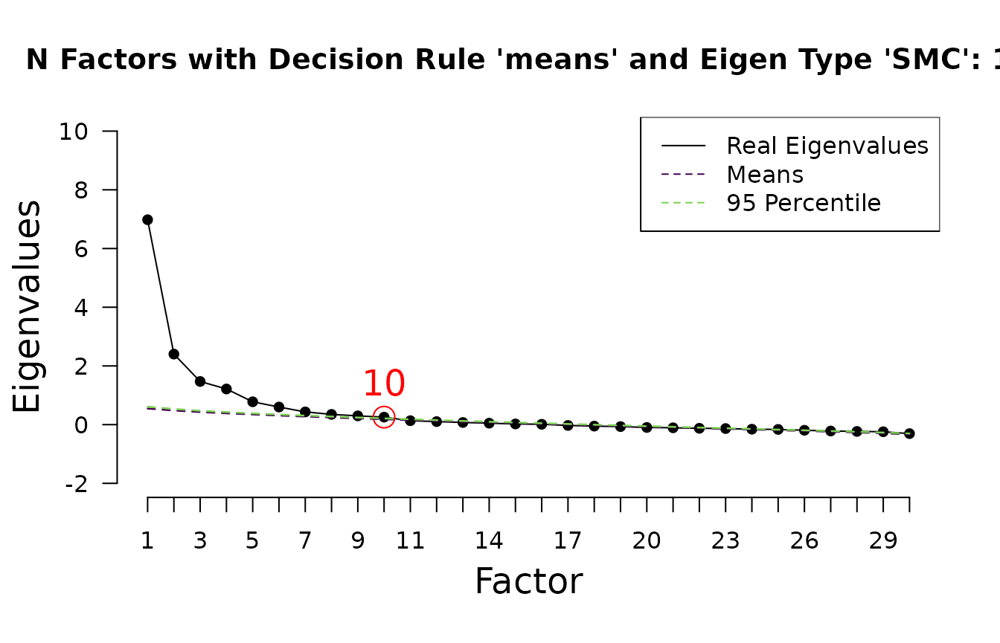
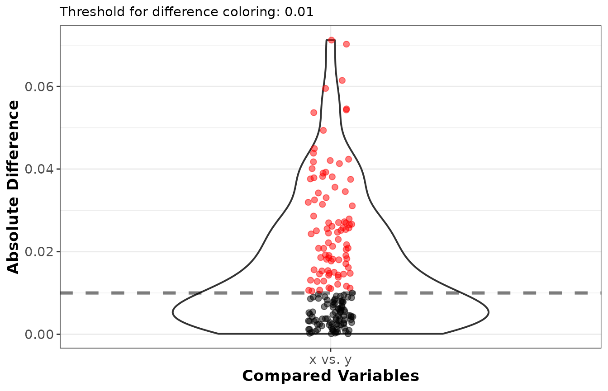
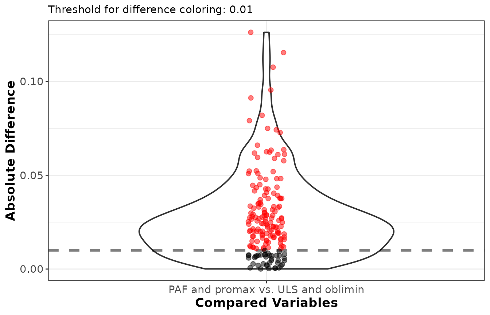
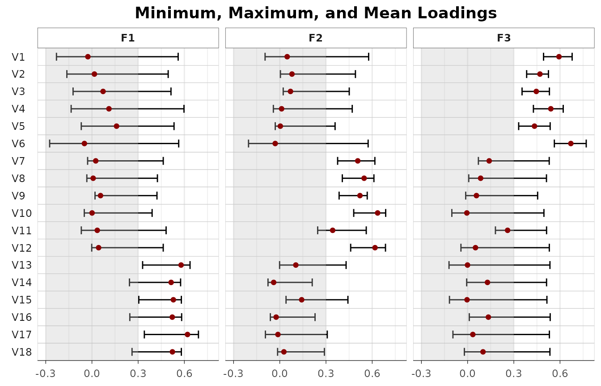

This vignette provides an overview for the functionalities of the EFAtools package. The general aim of the package is to provide flexible implementations of different algorithms for an exploratory factor analyses (EFA) procedure, including factor retention methods, factor extraction and rotation methods, as well as the computation of a Schmid-Leiman solution and McDonald’s omega coefficients.
The package was first designed to enable a comparison of EFA
(specifically, principal axis factoring with subsequent promax rotation)
performed in R using the psych
package and EFA performed in SPSS. That is why some functions allow the
specification of a type, including "psych" and
"SPSS", such that the respective procedure will be executed
to match the output of these implementations (which do not always lead
to the same results; see separate vignette Replicate_SPSS_psych
for a demonstration of the replication of original results). This
vignette will go through a complete example, that is, we will first show
how to determine the number of factors to retain, then perform different
factor extraction methods, run a Schmid-Leiman transformation and
compute omegas.
The package can be installed from CRAN using
install.packages("EFAtools"), or from GitHub using
devtools::install_github("mdsteiner/EFAtools"), and then
loaded using:
In this vignette, we will use the DOSPERT_raw dataset,
which contains responses to the Domain Specific Risk Taking Scale
(DOSPERT) of 3123 participants. The dataset is contained in the
EFAtools package, for details, see
?DOSPERT_raw. Note that this vignette is to provide a
general overview and it is beyond its scope to explain all methods and
functions in detail. If you want to learn more on the details and
methods, please see the respective help functions for explanations and
literature references. However, the dataset is rather large, so, just to
save time when building the vignette, we will only use the first 500
observations. When you normally do your analyses, you use the full
dataset.
# only use a subset to make analyses faster
DOSPERT_sub <- DOSPERT_raw[1:500,]The first step in an EFA procedure is to test whether your data is
suitable for factor analysis. To this end, the EFAtools
package provides the BARTLETT() and the KMO()
functions. The Bartlett’s test of sphericity tests whether a correlation
matrix is significantly different from an identity matrix (a correlation
matrix with zero correlations between all variables). This test should
thus be significant. The Kaiser-Meyer-Olkin criterion (KMO) represents
the degree to which each observed variable is predicted by the other
variables in the dataset and thus is another indicator for how
correlated the different variables are.
We can test whether our DOSPERT_sub dataset is suitable
for factor analysis as follows.
# Bartlett's test of sphericity
BARTLETT(DOSPERT_sub)
#> ℹ 'x' was not a correlation matrix. Correlations are found from entered raw data.
#>
#>
#> ✔ The Bartlett's test of sphericity was significant at an alpha level of .05.
#> These data are probably suitable for factor analysis.
#>
#> 𝜒²(435) = 5843.05, p < .001
# KMO criterion
KMO(DOSPERT_sub)
#> ℹ 'x' was not a correlation matrix. Correlations are found from entered raw data.
#>
#>
#> ── Kaiser-Meyer-Olkin criterion (KMO) ──────────────────────────────────────────
#>
#> ✔ The overall KMO value for your data is meritorious.
#> These data are probably suitable for factor analysis.
#>
#> Overall: 0.87
#>
#> For each variable:
#> ethR_1 ethR_2 ethR_3 ethR_4 ethR_5 ethR_6 finR_1 finR_2 finR_3 finR_4 finR_5
#> 0.908 0.927 0.906 0.818 0.926 0.837 0.880 0.816 0.853 0.857 0.853
#> finR_6 heaR_1 heaR_2 heaR_3 heaR_4 heaR_5 heaR_6 recR_1 recR_2 recR_3 recR_4
#> 0.861 0.912 0.898 0.892 0.889 0.882 0.935 0.888 0.927 0.905 0.849
#> recR_5 recR_6 socR_1 socR_2 socR_3 socR_4 socR_5 socR_6
#> 0.840 0.920 0.714 0.784 0.735 0.791 0.840 0.786Note that these tests can also be run in the N_FACTORS()
function.
As the goal of EFA is to determine the underlying factors from a set of multiple variables, one of the most important decisions is how many factors can or should be extracted. There exists a plethora of factor retention methods to use for this decision. The problem is that there is no method that consistently outperforms all other methods. Rather, which factor retention method to use depends on the structure of the data: are there few or many indicators, are factors strong or weak, are the factor intercorrelations weak or strong. For rules on which methods to use, see, for example, Auerswald and Moshagen, (2019).
There are multiple factor retention methods implemented in the
EFAtools package. They can either be called with separate
functions, or all (or a selection) of them using the
N_FACTORS() function.
Let’s first look at how to determine the number of factors to retain by calling separate functions. For example, if you would like to perform a parallel analysis based on squared multiple correlations (SMC; sometimes also called a parallel analysis with principal factors), you can do the following:
# determine the number of factors to retain using parallel analysis
PARALLEL(DOSPERT_sub, eigen_type = "SMC")
#> ℹ 'x' was not a correlation matrix. Correlations are found from entered raw data.
#>
#> Parallel Analysis performed using 1000 simulated random data sets
#> Eigenvalues were found using SMC
#>
#> Decision rule used: means
#>
#> ── Number of factors to retain according to ────────────────────────────────────
#>
#> • SMC-determined eigenvalues: 10
Generating the plot can also be suppressed if the output is printed explicitly:
# determine the number of factors to retain using parallel analysis
print(PARALLEL(DOSPERT_sub, eigen_type = "SMC"), plot = FALSE)
#> ℹ 'x' was not a correlation matrix. Correlations are found from entered raw data.
#>
#> Parallel Analysis performed using 1000 simulated random data sets
#> Eigenvalues were found using SMC
#>
#> Decision rule used: means
#>
#> ── Number of factors to retain according to ────────────────────────────────────
#>
#> • SMC-determined eigenvalues: 10Other factor retention methods can be used accordingly. For example,
to use the empirical Kaiser criterion, use the EKC
function:
# determine the number of factors to retain using parallel analysis
print(EKC(DOSPERT_sub), plot = FALSE)
#> ℹ 'x' was not a correlation matrix. Correlations are found from entered raw data.
#>
#> ── Number of factors suggested by EKC ──────────────────────────────────────────
#>
#> • Original implementation (Braeken & van Assen, 2017): 8
#> ℹ Different implementations of EKC exist. Make sure to report which one you relied on (see EKC help page for details)The following factor retention methods are currently implemented:
comparison data (CD()), empirical Kaiser criterion
(EKC()), the hull method (HULL()), the
Kaiser-Guttman criterion (KGC()), parallel analysis
(PARALLEL()), scree test (SCREE()), and
sequential model tests (SMT()). Many of these functions
have multiple versions of the respective factor retention method
implemented, for example, the parallel analysis can be done based on
eigenvalues found using unity (principal components) or SMCs, or on an
EFA procedure. Another example is the hull method, which can be used
with different fitting methods (principal axis factoring [PAF], maximum
likelihood [ML], or unweighted least squares [ULS]), and different
goodness of fit indices. Please see the respective function
documentations for details.
N_FACTORS()
If you want to use multiple factor retention methods, for example, to
compare whether different methods suggest the same number of factors, it
is easier to use the N_FACTORS() function. This is a
wrapper around all the implemented factor retention methods. Moreover,
it also enables to run the Bartlett’s test of sphericity and compute the
KMO criterion.
For example, to test the suitability of the data for factor analysis and to determine the number of factors to retain based on parallel analysis (but only using eigen values based on SMCs and PCA), the EKC, and the sequential model test, we can run the following code:
N_FACTORS(DOSPERT_sub, criteria = c("PARALLEL", "EKC", "SMT"),
eigen_type_other = c("SMC", "PCA"))
#>
#> ── Tests for the suitability of the data for factor analysis ───────────────────
#>
#> Bartlett's test of sphericity
#>
#> ✔ The Bartlett's test of sphericity was significant at an alpha level of .05.
#> These data are probably suitable for factor analysis.
#>
#> 𝜒²(435) = 5843.05, p < .001
#>
#> Kaiser-Meyer-Olkin criterion (KMO)
#>
#> ✔ The overall KMO value for your data is meritorious with 0.87.
#> These data are probably suitable for factor analysis.
#>
#> ── Number of factors suggested by the different factor retention criteria ──────
#>
#> • EKC (original implementation, type 'BvA2017'): 8
#> • Parallel analysis with PCA: 5
#> • Parallel analysis with SMC: 10
#> • Sequential 𝜒² model tests: 14
#> • Lower bound of RMSEA 90% confidence interval: 6
#> • Akaike Information Criterion: 13If all possible factor retention methods should be used, it is sufficient to provide the data object (note that this takes a while, as the comparison data is computationally expensive and therefore relatively slow method, especially if larger datasets are used). We additionally specify the method argument to use unweighted least squares (ULS) estimation. This is a bit faster than using principle axis factoring (PAF) and it enables the computation of more goodness of fit indices:
N_FACTORS(DOSPERT_sub, method = "ULS")
#>
#> ── Tests for the suitability of the data for factor analysis ───────────────────
#>
#> Bartlett's test of sphericity
#>
#> ✔ The Bartlett's test of sphericity was significant at an alpha level of .05.
#> These data are probably suitable for factor analysis.
#>
#> 𝜒²(435) = 5843.05, p < .001
#>
#> Kaiser-Meyer-Olkin criterion (KMO)
#>
#> ✔ The overall KMO value for your data is meritorious with 0.87.
#> These data are probably suitable for factor analysis.
#>
#> ── Number of factors suggested by the different factor retention criteria ──────
#>
#> • Comparison data: 10
#> • EKC (original implementation, type 'BvA2017'): 8
#> • Hull method with CAF: 6
#> • Hull method with CFI: 6
#> • Hull method with RMSEA: 6
#> • MAP original (TR2):: 6
#> • MAP revised (TR4): 6
#> • NEST: 10
#> • Parallel analysis with SMC: 10Now, this is not the scenario one is happy about, but it still does happen: There is no obvious convergence between the methods and thus the choice of the number of factors to retain becomes rather difficult (and to some extend arbitrary). We will proceed with 6 factors, as it is what is typically used with DOSPERT data, but this does not mean that other number of factors are not just as plausible.
Note that all factor retention methods, except comparison data (CD),
can also be used with correlation matrices. We use
method = "ULS" and
eigen_type_other = c("SMC", "PCA") to skip the slower
criteria. In this case, the sample size has to be specified:
N_FACTORS(test_models$baseline$cormat, N = 500,
method = "ULS", eigen_type_other = c("SMC", "PCA"))
#> Warning in N_FACTORS(test_models$baseline$cormat, N = 500, method = "ULS", : ! 'x' was a correlation matrix but CD needs raw data. Skipping CD.
#>
#>
#> ── Tests for the suitability of the data for factor analysis ───────────────────
#>
#> Bartlett's test of sphericity
#>
#> ✔ The Bartlett's test of sphericity was significant at an alpha level of .05.
#> These data are probably suitable for factor analysis.
#>
#> 𝜒²(153) = 2173.28, p < .001
#>
#> Kaiser-Meyer-Olkin criterion (KMO)
#>
#> ✔ The overall KMO value for your data is marvellous with 0.916.
#> These data are probably suitable for factor analysis.
#>
#> ── Number of factors suggested by the different factor retention criteria ──────
#>
#> • Comparison data: NA
#> • EKC (original implementation, type 'BvA2017'): 3
#> • Hull method with CAF: 3
#> • Hull method with CFI: 3
#> • Hull method with RMSEA: 3
#> • MAP original (TR2):: 1
#> • MAP revised (TR4): 3
#> • NEST: 3
#> • Parallel analysis with PCA: 3
#> • Parallel analysis with SMC: 3Multiple algorithms to perform an EFA and to rotate the found
solutions are implemented in the EFAtools package. All of
them can be used using the EFA() function. To perform the
EFA, you can use one of principal axis factoring (PAF), maximum
likelihood estimation (ML), and unweighted least squares (ULS; also
sometimes referred to as MINRES). To rotate the solutions, the
EFAtools package offers varimax and promax rotations, as
well as the orthogonal and oblique rotations provided by the
GPArotation package (i.e., the GPArotation
functions are called in the EFA() function in this
case).
You can run an EFA with PAF and no rotation like this:
EFA(DOSPERT_sub, n_factors = 6)
#> ℹ 'x' was not a correlation matrix. Correlations are found from entered raw data.
#>
#>
#> EFA performed with type = 'EFAtools', method = 'PAF', and rotation = 'none'.
#>
#> ── Model Diagnostics ───────────────────────────────────────────────────────────
#>
#> Factors: 6
#> Variables: 30
#> N: 500
#> Heywood cases: 0
#> Cross-loading items (|loading| >= .300): 14
#> Items without salient loading (|loading| >= .300): 0
#> Factors with fewer than 3 salient indicators: 2
#> Items with primary-loading gap < .200: 18
#> Largest |residual|: .150
#>
#> ── Unrotated Loadings ──────────────────────────────────────────────────────────
#>
#> F1 F2 F3 F4 F5 F6 h2 u2
#> ethR_1 .558 -.193 .141 .232 -.129 .049 .442 .558
#> ethR_2 .472 -.157 .073 .242 .037 .059 .316 .684
#> ethR_3 .507 -.402 .164 .112 -.087 .062 .470 .530
#> ethR_4 .308 -.278 .189 .294 -.103 .224 .356 .644
#> ethR_5 .459 -.173 .202 .042 -.082 .045 .292 .708
#> ethR_6 .412 -.308 .230 .201 -.066 .207 .405 .595
#> finR_1 .602 -.304 -.461 -.045 .244 .028 .730 .270
#> finR_2 .294 .281 -.255 -.066 -.341 .086 .359 .641
#> finR_3 .626 -.285 -.471 -.031 .264 .114 .778 .222
#> finR_4 .557 -.012 -.357 -.023 -.437 -.063 .633 .367
#> finR_5 .657 -.342 -.491 -.064 .218 .028 .842 .158
#> finR_6 .551 .157 -.341 -.007 -.429 -.082 .635 .365
#> heaR_1 .464 -.079 .047 .133 .010 .046 .244 .756
#> heaR_2 .409 -.020 .163 .229 .040 .068 .252 .748
#> heaR_3 .497 -.101 .172 .127 .007 -.325 .409 .591
#> heaR_4 .547 -.110 .183 .038 .070 -.322 .455 .545
#> heaR_5 .382 .002 .175 .250 .028 .010 .240 .760
#> heaR_6 .504 .063 .102 .015 .006 -.196 .307 .693
#> recR_1 .443 .337 .057 -.064 .007 -.063 .322 .678
#> recR_2 .617 -.012 .147 -.141 .126 -.232 .493 .507
#> recR_3 .612 .178 .103 -.247 .080 -.153 .507 .493
#> recR_4 .634 .228 .254 -.447 .033 .235 .774 .226
#> recR_5 .640 .135 .267 -.463 .051 .261 .784 .216
#> recR_6 .629 .238 .135 -.244 -.060 -.014 .534 .466
#> socR_1 .075 .528 -.024 .233 .213 .124 .400 .600
#> socR_2 .358 .428 -.083 .247 .147 .013 .401 .599
#> socR_3 .118 .528 -.160 .122 .044 .116 .348 .652
#> socR_4 .235 .481 -.057 .214 .166 -.093 .372 .628
#> socR_5 .317 .330 .014 .154 -.030 .002 .234 .766
#> socR_6 .260 .462 -.058 .267 -.023 .082 .363 .637
#>
#> Legend:
#> bold = |loading| >= .300
#> grey = below cutoff
#> red h2/u2 = Heywood-relevant value
#>
#>
#> ── Simple Structure Diagnostics ────────────────────────────────────────────────
#>
#> Items with cross-loadings, |loading| >= .300 on multiple factors:
#> • ethR_3: F1 = .507, F2 = -.402
#> • ethR_6: F1 = .412, F2 = -.308
#> • finR_1: F1 = .602, F3 = -.461, F2 = -.304
#> • finR_3: F1 = .626, F3 = -.471
#> • finR_4: F1 = .557, F5 = -.437, F3 = -.357
#> • finR_5: F1 = .657, F3 = -.491, F2 = -.342
#> • finR_6: F1 = .551, F5 = -.429, F3 = -.341
#> • heaR_3: F1 = .497, F6 = -.325
#> • heaR_4: F1 = .547, F6 = -.322
#> • recR_1: F1 = .443, F2 = .337
#> • ... 4 more not shown
#>
#> Items with primary-loading gap < .200:
#> • ethR_3: F1 = .507, F2 = -.402
#> • ethR_4: F1 = .308, F4 = .294
#> • ethR_6: F1 = .412, F2 = -.308
#> • finR_1: F1 = .602, F3 = -.461
#> • finR_2: F5 = -.341, F1 = .294
#> • finR_3: F1 = .626, F3 = -.471
#> • finR_4: F1 = .557, F5 = -.437
#> • finR_5: F1 = .657, F3 = -.491
#> • finR_6: F1 = .551, F5 = -.429
#> • heaR_2: F1 = .409, F4 = .229
#> • ... 8 more not shown
#>
#> Factors with fewer than 3 salient indicators:
#> • F4: 2 salient indicators
#> • F6: 2 salient indicators
#>
#>
#> ── Variances Accounted for ─────────────────────────────────────────────────────
#>
#> F1 F2 F3 F4 F5 F6
#> SS loadings 7.013 2.417 1.529 1.246 0.850 0.641
#> Prop Tot Var 0.234 0.081 0.051 0.042 0.028 0.021
#> Cum Prop Tot Var 0.234 0.314 0.365 0.407 0.435 0.457
#> Prop Comm Var 0.512 0.177 0.112 0.091 0.062 0.047
#> Cum Prop Comm Var 0.512 0.689 0.800 0.891 0.953 1.000
#>
#> ── Model Fit ───────────────────────────────────────────────────────────────────
#>
#> CAF : .48
#> RMSR : .03
#> df: 270
#>
#> ── Residual Diagnostics ────────────────────────────────────────────────────────
#>
#> Residual cutoff: |r| > .100
#> Number of large residuals: 5
#> Largest absolute residual: .150
#>
#> Largest residuals:
#> • socR_5 ~~ socR_6: .150
#> • recR_1 ~~ recR_3: .141
#> • socR_2 ~~ socR_4: .141
#> • heaR_1 ~~ heaR_2: .113
#> • socR_3 ~~ socR_6: .110
#>
#> Inspect the residual matrix for details (e.g., with residuals()).To rotate the loadings (e.g., using a promax rotation) adapt the
rotation argument:
EFA(DOSPERT_sub, n_factors = 6, rotation = "promax")
#> ℹ 'x' was not a correlation matrix. Correlations are found from entered raw data.
#>
#>
#> EFA performed with type = 'EFAtools', method = 'PAF', and rotation = 'promax'.
#>
#> ── Model Diagnostics ───────────────────────────────────────────────────────────
#>
#> Factors: 6
#> Variables: 30
#> N: 500
#> Heywood cases: 0
#> Cross-loading items (|loading| >= .300): 1
#> Items without salient loading (|loading| >= .300): 1
#> Factors with fewer than 3 salient indicators: 0
#> Items with primary-loading gap < .200: 2
#> Largest |residual|: .150
#> Factor intercorrelations > .85: none
#>
#> ── Rotated Loadings ────────────────────────────────────────────────────────────
#>
#> F3 F4 F1 F2 F6 F5 h2 u2
#> ethR_1 -.020 -.025 .547 .009 .130 .122 .442 .558
#> ethR_2 .132 -.055 .447 .115 .098 -.043 .316 .684
#> ethR_3 .068 .045 .532 -.212 .117 .030 .470 .530
#> ethR_4 -.039 -.035 .695 .000 -.162 -.002 .356 .644
#> ethR_5 -.051 .159 .382 -.100 .130 .036 .292 .708
#> ethR_6 -.003 .086 .664 -.063 -.089 -.044 .405 .595
#> finR_1 .853 -.019 -.015 .003 .022 .008 .730 .270
#> finR_2 -.044 .121 -.050 .120 -.211 .599 .359 .641
#> finR_3 .895 .035 .046 .061 -.094 -.011 .778 .222
#> finR_4 .098 -.071 .039 -.102 .035 .768 .633 .367
#> finR_5 .887 -.010 -.006 -.038 .023 .057 .842 .158
#> finR_6 .023 -.051 -.022 .031 .061 .774 .635 .365
#> heaR_1 .111 .042 .318 .092 .091 .019 .244 .756
#> heaR_2 -.003 .020 .416 .191 .093 -.081 .252 .748
#> heaR_3 -.071 -.140 .133 -.036 .674 -.009 .409 .591
#> heaR_4 -.006 -.031 .074 -.067 .697 -.074 .455 .545
#> heaR_5 -.053 -.037 .385 .197 .170 -.072 .240 .760
#> heaR_6 -.026 .062 .044 .059 .455 .048 .307 .693
#> recR_1 -.060 .253 -.067 .247 .219 .094 .322 .678
#> recR_2 .089 .231 -.046 -.046 .574 -.090 .493 .507
#> recR_3 .053 .402 -.155 .035 .423 .011 .507 .493
#> recR_4 -.010 .926 .042 .002 -.089 -.017 .774 .226
#> recR_5 .034 .945 .088 -.065 -.114 -.058 .784 .216
#> recR_6 -.067 .510 -.020 .053 .212 .154 .534 .466
#> socR_1 .025 .029 .016 .679 -.137 -.162 .400 .600
#> socR_2 .103 -.035 .057 .602 .072 -.020 .401 .599
#> socR_3 .029 .061 -.084 .559 -.199 .110 .348 .652
#> socR_4 .023 -.082 -.090 .583 .197 -.057 .372 .628
#> socR_5 -.086 .032 .097 .370 .077 .117 .234 .766
#> socR_6 -.072 -.035 .134 .568 -.079 .142 .363 .637
#>
#> Legend:
#> bold = |loading| >= .300
#> grey = below cutoff
#> red h2/u2 = Heywood-relevant value
#>
#>
#> ── Factor Intercorrelations ────────────────────────────────────────────────────
#>
#> F1 F2 F3 F4 F5 F6
#> F1 1.000 0.349 0.455 0.046 0.502 0.463
#> F2 0.349 1.000 0.357 0.316 0.594 0.441
#> F3 0.455 0.357 1.000 0.031 0.567 0.329
#> F4 0.046 0.316 0.031 1.000 0.287 0.324
#> F5 0.502 0.594 0.567 0.287 1.000 0.486
#> F6 0.463 0.441 0.329 0.324 0.486 1.000
#>
#> ── Simple Structure Diagnostics ────────────────────────────────────────────────
#>
#> Items with no salient loading, |loading| >= .300:
#> • recR_1
#>
#> Items with cross-loadings, |loading| >= .300 on multiple factors:
#> • recR_3: F6 = .423, F4 = .402
#>
#> Items with primary-loading gap < .200:
#> • heaR_5: F1 = .385, F2 = .197
#> • recR_3: F6 = .423, F4 = .402
#>
#>
#> ── Variances Accounted for ─────────────────────────────────────────────────────
#>
#> F3 F4 F1 F2 F6 F5
#> SS loadings 2.457 2.518 2.565 2.213 2.225 1.717
#> Prop Tot Var 0.082 0.084 0.086 0.074 0.074 0.057
#> Cum Prop Tot Var 0.082 0.166 0.251 0.325 0.399 0.457
#> Prop Comm Var 0.179 0.184 0.187 0.162 0.162 0.125
#> Cum Prop Comm Var 0.179 0.363 0.551 0.712 0.875 1.000
#>
#> ── Model Fit ───────────────────────────────────────────────────────────────────
#>
#> CAF : .48
#> RMSR : .03
#> df: 270
#>
#> ── Residual Diagnostics ────────────────────────────────────────────────────────
#>
#> Residual cutoff: |r| > .100
#> Number of large residuals: 5
#> Largest absolute residual: .150
#>
#> Largest residuals:
#> • socR_5 ~~ socR_6: .150
#> • recR_1 ~~ recR_3: .141
#> • socR_2 ~~ socR_4: .141
#> • heaR_1 ~~ heaR_2: .113
#> • socR_3 ~~ socR_6: .110
#>
#> Inspect the residual matrix for details (e.g., with residuals()).This now performed PAF with promax rotation with the specification,
on average, we found to produce the most accurate results in a
simulation analysis (see function documentation). If you want to
replicate the implementation of the psych R package, you can
set the type argument to "psych":
EFA(DOSPERT_sub, n_factors = 6, rotation = "promax", type = "psych")
#> ℹ 'x' was not a correlation matrix. Correlations are found from entered raw data.
#>
#>
#> EFA performed with type = 'psych', method = 'PAF', and rotation = 'promax'.
#>
#> ── Model Diagnostics ───────────────────────────────────────────────────────────
#>
#> Factors: 6
#> Variables: 30
#> N: 500
#> Heywood cases: 0
#> Cross-loading items (|loading| >= .300): 1
#> Items without salient loading (|loading| >= .300): 1
#> Factors with fewer than 3 salient indicators: 0
#> Items with primary-loading gap < .200: 2
#> Largest |residual|: .150
#> Factor intercorrelations > .85: none
#>
#> ── Rotated Loadings ────────────────────────────────────────────────────────────
#>
#> F1 F2 F6 F4 F3 F5 h2 u2
#> ethR_1 .554 -.002 -.029 .116 -.024 .136 .442 .558
#> ethR_2 .441 .119 -.054 .088 .124 -.035 .316 .684
#> ethR_3 .556 -.227 .052 .113 .063 .048 .470 .530
#> ethR_4 .704 -.005 .003 -.195 -.042 -.006 .356 .644
#> ethR_5 .395 -.111 .156 .131 -.052 .044 .292 .708
#> ethR_6 .677 -.070 .117 -.109 -.007 -.047 .405 .595
#> finR_1 -.002 .017 -.018 .040 .827 .029 .730 .270
#> finR_2 -.034 .103 .116 -.229 -.041 .593 .359 .641
#> finR_3 .057 .079 .050 -.082 .868 -.000 .778 .222
#> finR_4 .078 -.134 -.100 .026 .096 .801 .633 .367
#> finR_5 .013 -.027 -.010 .042 .860 .081 .842 .158
#> finR_6 .005 .003 -.088 .051 .023 .801 .635 .365
#> heaR_1 .315 .093 .038 .087 .105 .024 .244 .756
#> heaR_2 .401 .197 .018 .082 -.007 -.083 .252 .748
#> heaR_3 .125 -.044 -.210 .700 -.072 .036 .409 .591
#> heaR_4 .068 -.074 -.103 .732 -.009 -.032 .455 .545
#> heaR_5 .367 .201 -.048 .162 -.056 -.068 .240 .760
#> heaR_6 .036 .054 .008 .477 -.028 .071 .307 .693
#> recR_1 -.086 .250 .215 .233 -.059 .089 .322 .678
#> recR_2 -.051 -.049 .170 .618 .085 -.065 .493 .507
#> recR_3 -.160 .032 .348 .464 .051 .019 .507 .493
#> recR_4 .051 -.002 .933 -.063 -.010 -.059 .774 .226
#> recR_5 .102 -.069 .961 -.087 .033 -.100 .784 .216
#> recR_6 -.018 .044 .476 .236 -.065 .147 .534 .466
#> socR_1 -.043 .713 .032 -.155 .022 -.200 .400 .600
#> socR_2 .007 .627 -.057 .062 .097 -.034 .401 .599
#> socR_3 -.123 .580 .061 -.217 .028 .079 .348 .652
#> socR_4 -.144 .608 -.121 .197 .020 -.065 .372 .628
#> socR_5 .070 .377 .010 .068 -.085 .109 .234 .766
#> socR_6 .094 .583 -.044 -.104 -.073 .122 .363 .637
#>
#> Legend:
#> bold = |loading| >= .300
#> grey = below cutoff
#> red h2/u2 = Heywood-relevant value
#>
#>
#> ── Factor Intercorrelations ────────────────────────────────────────────────────
#>
#> F1 F2 F3 F4 F5 F6
#> F1 1.000 0.149 0.333 0.585 0.435 0.306
#> F2 0.149 1.000 0.398 0.387 0.083 0.436
#> F3 0.333 0.398 1.000 0.637 0.316 0.501
#> F4 0.585 0.387 0.637 1.000 0.463 0.483
#> F5 0.435 0.083 0.316 0.463 1.000 0.422
#> F6 0.306 0.436 0.501 0.483 0.422 1.000
#>
#> ── Simple Structure Diagnostics ────────────────────────────────────────────────
#>
#> Items with no salient loading, |loading| >= .300:
#> • recR_1
#>
#> Items with cross-loadings, |loading| >= .300 on multiple factors:
#> • recR_3: F4 = .464, F6 = .348
#>
#> Items with primary-loading gap < .200:
#> • heaR_5: F1 = .367, F2 = .201
#> • recR_3: F4 = .464, F6 = .348
#>
#>
#> ── Variances Accounted for ─────────────────────────────────────────────────────
#>
#> F1 F2 F6 F4 F3 F5
#> SS loadings 2.612 2.256 2.332 2.353 2.364 1.778
#> Prop Tot Var 0.087 0.075 0.078 0.078 0.079 0.059
#> Cum Prop Tot Var 0.087 0.162 0.240 0.318 0.397 0.457
#> Prop Comm Var 0.191 0.165 0.170 0.172 0.173 0.130
#> Cum Prop Comm Var 0.191 0.355 0.526 0.698 0.870 1.000
#>
#> ── Model Fit ───────────────────────────────────────────────────────────────────
#>
#> CAF : .48
#> RMSR : .03
#> df: 270
#>
#> ── Residual Diagnostics ────────────────────────────────────────────────────────
#>
#> Residual cutoff: |r| > .100
#> Number of large residuals: 5
#> Largest absolute residual: .150
#>
#> Largest residuals:
#> • socR_5 ~~ socR_6: .150
#> • recR_1 ~~ recR_3: .141
#> • socR_2 ~~ socR_4: .141
#> • heaR_1 ~~ heaR_2: .113
#> • socR_3 ~~ socR_6: .110
#>
#> Inspect the residual matrix for details (e.g., with residuals()).If you want to use the SPSS implementation, you can set the
type argument to "SPSS":
EFA(DOSPERT_sub, n_factors = 6, rotation = "promax", type = "SPSS")
#> ℹ 'x' was not a correlation matrix. Correlations are found from entered raw data.
#>
#>
#> EFA performed with type = 'SPSS', method = 'PAF', and rotation = 'promax'.
#>
#> ── Model Diagnostics ───────────────────────────────────────────────────────────
#>
#> Factors: 6
#> Variables: 30
#> N: 500
#> Heywood cases: 0
#> Cross-loading items (|loading| >= .300): 1
#> Items without salient loading (|loading| >= .300): 1
#> Factors with fewer than 3 salient indicators: 0
#> Items with primary-loading gap < .200: 2
#> Largest |residual|: .150
#> Factor intercorrelations > .85: none
#>
#> ── Rotated Loadings ────────────────────────────────────────────────────────────
#>
#> F1 F4 F3 F2 F6 F5 h2 u2
#> ethR_1 .547 -.025 -.020 .009 .130 .122 .442 .558
#> ethR_2 .447 -.055 .132 .115 .098 -.043 .316 .684
#> ethR_3 .532 .045 .068 -.212 .117 .030 .470 .530
#> ethR_4 .695 -.035 -.039 .000 -.162 -.002 .356 .644
#> ethR_5 .382 .159 -.051 -.100 .130 .036 .292 .708
#> ethR_6 .664 .086 -.003 -.063 -.089 -.044 .405 .595
#> finR_1 -.015 -.019 .853 .003 .022 .008 .730 .270
#> finR_2 -.050 .121 -.044 .120 -.211 .599 .359 .641
#> finR_3 .046 .035 .895 .061 -.094 -.011 .778 .222
#> finR_4 .039 -.071 .098 -.102 .035 .768 .633 .367
#> finR_5 -.006 -.010 .887 -.038 .023 .057 .842 .158
#> finR_6 -.022 -.051 .023 .031 .061 .774 .635 .365
#> heaR_1 .318 .042 .111 .092 .091 .019 .244 .756
#> heaR_2 .416 .020 -.003 .191 .093 -.081 .252 .748
#> heaR_3 .133 -.140 -.071 -.036 .674 -.009 .409 .591
#> heaR_4 .074 -.031 -.006 -.067 .697 -.074 .455 .545
#> heaR_5 .385 -.037 -.053 .197 .170 -.072 .240 .760
#> heaR_6 .044 .062 -.026 .059 .455 .048 .307 .693
#> recR_1 -.067 .253 -.060 .247 .219 .094 .322 .678
#> recR_2 -.046 .231 .089 -.046 .574 -.090 .493 .507
#> recR_3 -.155 .402 .053 .035 .423 .011 .507 .493
#> recR_4 .042 .926 -.010 .002 -.089 -.017 .774 .226
#> recR_5 .088 .945 .034 -.065 -.114 -.058 .784 .216
#> recR_6 -.020 .510 -.067 .053 .212 .154 .534 .466
#> socR_1 .016 .029 .025 .679 -.137 -.162 .400 .600
#> socR_2 .057 -.035 .103 .602 .072 -.020 .401 .599
#> socR_3 -.084 .061 .029 .559 -.199 .110 .348 .652
#> socR_4 -.090 -.082 .023 .583 .197 -.057 .372 .628
#> socR_5 .097 .032 -.086 .370 .077 .117 .234 .766
#> socR_6 .134 -.035 -.072 .568 -.079 .142 .363 .637
#>
#> Legend:
#> bold = |loading| >= .300
#> grey = below cutoff
#> red h2/u2 = Heywood-relevant value
#>
#>
#> ── Factor Intercorrelations ────────────────────────────────────────────────────
#>
#> F1 F2 F3 F4 F5 F6
#> F1 1.000 0.357 0.455 0.031 0.567 0.329
#> F2 0.357 1.000 0.349 0.316 0.594 0.441
#> F3 0.455 0.349 1.000 0.046 0.502 0.463
#> F4 0.031 0.316 0.046 1.000 0.287 0.324
#> F5 0.567 0.594 0.502 0.287 1.000 0.486
#> F6 0.329 0.441 0.463 0.324 0.486 1.000
#>
#> ── Simple Structure Diagnostics ────────────────────────────────────────────────
#>
#> Items with no salient loading, |loading| >= .300:
#> • recR_1
#>
#> Items with cross-loadings, |loading| >= .300 on multiple factors:
#> • recR_3: F6 = .423, F4 = .402
#>
#> Items with primary-loading gap < .200:
#> • heaR_5: F1 = .385, F2 = .197
#> • recR_3: F6 = .423, F4 = .402
#>
#>
#> ── Variances Accounted for ─────────────────────────────────────────────────────
#>
#> F1 F4 F3 F2 F6 F5
#> SS loadings 2.565 2.518 2.457 2.213 2.225 1.717
#> Prop Tot Var 0.086 0.084 0.082 0.074 0.074 0.057
#> Cum Prop Tot Var 0.086 0.169 0.251 0.325 0.399 0.457
#> Prop Comm Var 0.187 0.184 0.179 0.162 0.162 0.125
#> Cum Prop Comm Var 0.187 0.371 0.551 0.712 0.875 1.000
#>
#> ── Model Fit ───────────────────────────────────────────────────────────────────
#>
#> CAF : .48
#> RMSR : .03
#> df: 270
#>
#> ── Residual Diagnostics ────────────────────────────────────────────────────────
#>
#> Residual cutoff: |r| > .100
#> Number of large residuals: 5
#> Largest absolute residual: .150
#>
#> Largest residuals:
#> • socR_5 ~~ socR_6: .150
#> • recR_1 ~~ recR_3: .141
#> • socR_2 ~~ socR_4: .141
#> • heaR_1 ~~ heaR_2: .113
#> • socR_3 ~~ socR_6: .110
#>
#> Inspect the residual matrix for details (e.g., with residuals()).This enables comparisons of different implementations. The
COMPARE() function provides an easy way to compare how
similar two loading (pattern) matrices are:
COMPARE(
EFA(DOSPERT_sub, n_factors = 6, rotation = "promax", type = "psych")$rot_loadings,
EFA(DOSPERT_sub, n_factors = 6, rotation = "promax", type = "SPSS")$rot_loadings
)
#> ℹ 'x' was not a correlation matrix. Correlations are found from entered raw data.
#>
#> ℹ 'x' was not a correlation matrix. Correlations are found from entered raw data.
#>
#> Mean [min, max] absolute difference: 0.0159 [ 0.0001, 0.0712]
#> Median absolute difference: 0.0102
#> Max decimals where all numbers are equal: 0
#> Minimum number of decimals provided: 18
#>
#> F1 F2 F6 F4 F3 F5
#> ethR_1 0.0078 -0.0106 -0.0042 -0.0138 -0.0035 0.0148
#> ethR_2 -0.0059 0.0038 0.0008 -0.0100 -0.0078 0.0082
#> ethR_3 0.0245 -0.0146 0.0066 -0.0037 -0.0052 0.0186
#> ethR_4 0.0090 -0.0054 0.0375 -0.0325 -0.0028 -0.0045
#> ethR_5 0.0128 -0.0116 -0.0035 0.0007 -0.0011 0.0073
#> ethR_6 0.0129 -0.0067 0.0315 -0.0208 -0.0038 -0.0033
#> finR_1 0.0131 0.0143 0.0012 0.0183 -0.0257 0.0209
#> finR_2 0.0162 -0.0171 -0.0048 -0.0177 0.0025 -0.0055
#> finR_3 0.0110 0.0182 0.0150 0.0121 -0.0272 0.0107
#> finR_4 0.0392 -0.0319 -0.0286 -0.0093 -0.0023 0.0331
#> finR_5 0.0191 0.0113 0.0007 0.0192 -0.0266 0.0243
#> finR_6 0.0265 -0.0279 -0.0376 -0.0097 -0.0002 0.0271
#> heaR_1 -0.0024 0.0009 -0.0042 -0.0038 -0.0062 0.0053
#> heaR_2 -0.0153 0.0059 -0.0011 -0.0105 -0.0039 -0.0020
#> heaR_3 -0.0075 -0.0086 -0.0702 0.0258 -0.0012 0.0450
#> heaR_4 -0.0064 -0.0065 -0.0712 0.0356 -0.0028 0.0424
#> heaR_5 -0.0182 0.0048 -0.0112 -0.0087 -0.0024 0.0034
#> heaR_6 -0.0085 -0.0045 -0.0537 0.0222 -0.0015 0.0230
#> recR_1 -0.0191 0.0028 -0.0382 0.0146 0.0004 -0.0053
#> recR_2 -0.0045 -0.0025 -0.0615 0.0438 -0.0046 0.0251
#> recR_3 -0.0054 -0.0023 -0.0546 0.0413 -0.0024 0.0080
#> recR_4 0.0091 -0.0036 0.0078 0.0261 0.0001 -0.0421
#> recR_5 0.0148 -0.0042 0.0154 0.0270 -0.0012 -0.0417
#> recR_6 0.0021 -0.0090 -0.0342 0.0247 0.0011 -0.0068
#> socR_1 -0.0595 0.0345 0.0032 -0.0180 -0.0031 -0.0379
#> socR_2 -0.0494 0.0255 -0.0217 -0.0095 -0.0061 -0.0144
#> socR_3 -0.0390 0.0208 0.0001 -0.0185 -0.0017 -0.0311
#> socR_4 -0.0543 0.0254 -0.0381 -0.0005 -0.0032 -0.0083
#> socR_5 -0.0270 0.0072 -0.0213 -0.0092 0.0003 -0.0082
#> socR_6 -0.0401 0.0156 -0.0089 -0.0251 -0.0005 -0.0205
#> Warning: `aes_string()` was deprecated in ggplot2 3.0.0.
#> ℹ Please use tidy evaluation idioms with `aes()`.
#> ℹ See also `vignette("ggplot2-in-packages")` for more information.
#> ℹ The deprecated feature was likely used in the EFAtools package.
#> Please report the issue at <https://github.com/mdsteiner/EFAtools/issues>.
#> This warning is displayed once per session.
#> Call `lifecycle::last_lifecycle_warnings()` to see where this warning was
#> generated.
#> Warning: Using `size` aesthetic for lines was deprecated in ggplot2 3.4.0.
#> ℹ Please use `linewidth` instead.
#> ℹ The deprecated feature was likely used in the EFAtools package.
#> Please report the issue at <https://github.com/mdsteiner/EFAtools/issues>.
#> This warning is displayed once per session.
#> Call `lifecycle::last_lifecycle_warnings()` to see where this warning was
#> generated.
Why would you want to do this? One of us has had the experience that a reviewer asked whether the results can be reproduced in another statistical program than R. We therefore implemented this possibility in the package for an easy application of large scale, systematic comparisons.
Note that the type argument of the EFA()
function only affects the implementations of principal axis factoring
(PAF), varimax and promax rotations. The other procedures are not
affected (except the order of the rotated factors for the other rotation
methods).
As indicated previously, it is also possible to use different estimation and rotation methods. For example, to perform an EFA with ULS and an oblimin rotation, you can use the following code:
EFA(DOSPERT_sub, n_factors = 6, rotation = "oblimin", method = "ULS")
#> ℹ 'x' was not a correlation matrix. Correlations are found from entered raw data.
#>
#>
#> EFA performed with type = 'EFAtools', method = 'ULS', and rotation = 'oblimin'.
#>
#> ── Model Diagnostics ───────────────────────────────────────────────────────────
#>
#> Factors: 6
#> Variables: 30
#> N: 500
#> Heywood cases: 0
#> Cross-loading items (|loading| >= .300): 1
#> Items without salient loading (|loading| >= .300): 1
#> Factors with fewer than 3 salient indicators: 0
#> Items with primary-loading gap < .200: 5
#> Largest |residual|: .150
#> Factor intercorrelations > .85: none
#>
#> ── Rotated Loadings ────────────────────────────────────────────────────────────
#>
#> F1 F2 F3 F4 F5 F6 h2 u2
#> ethR_1 .039 .009 .522 -.007 .146 .137 .441 .559
#> ethR_2 .166 -.025 .419 .100 -.008 .097 .316 .684
#> ethR_3 .120 .064 .511 -.220 .052 .115 .470 .530
#> ethR_4 -.013 -.038 .644 -.031 .008 -.104 .356 .644
#> ethR_5 -.003 .177 .371 -.103 .059 .126 .292 .708
#> ethR_6 .029 .084 .620 -.086 -.025 -.048 .405 .595
#> finR_1 .850 -.013 -.012 .003 .028 .004 .729 .271
#> finR_2 -.022 .102 -.039 .106 .551 -.137 .358 .642
#> finR_3 .883 .028 .039 .054 .007 -.088 .778 .222
#> finR_4 .160 -.054 .063 -.109 .725 .068 .634 .366
#> finR_5 .890 -.005 -.002 -.037 .073 .006 .842 .158
#> finR_6 .085 -.028 .005 .023 .737 .092 .636 .364
#> heaR_1 .144 .064 .302 .083 .046 .091 .244 .756
#> heaR_2 .029 .047 .389 .176 -.043 .095 .252 .748
#> heaR_3 .011 -.044 .154 -.016 .051 .558 .409 .591
#> heaR_4 .073 .060 .101 -.041 -.008 .571 .455 .545
#> heaR_5 -.016 .002 .362 .185 -.031 .158 .240 .760
#> heaR_6 .035 .123 .064 .074 .092 .382 .307 .693
#> recR_1 -.024 .282 -.050 .254 .122 .193 .322 .678
#> recR_2 .153 .295 -.014 -.016 -.028 .467 .493 .507
#> recR_3 .105 .441 -.118 .062 .056 .348 .507 .493
#> recR_4 .010 .881 .053 .014 .001 -.060 .774 .226
#> recR_5 .052 .897 .095 -.053 -.039 -.084 .786 .214
#> recR_6 -.016 .524 .004 .068 .178 .191 .534 .466
#> socR_1 -.004 .033 -.010 .656 -.134 -.104 .400 .600
#> socR_2 .109 -.000 .043 .585 .018 .074 .401 .599
#> socR_3 .009 .054 -.095 .539 .110 -.147 .348 .652
#> socR_4 .031 -.034 -.091 .576 -.015 .169 .372 .628
#> socR_5 -.061 .059 .091 .359 .137 .086 .234 .766
#> socR_6 -.064 -.017 .114 .542 .155 -.036 .363 .637
#>
#> Legend:
#> bold = |loading| >= .300
#> grey = below cutoff
#> red h2/u2 = Heywood-relevant value
#>
#>
#> ── Factor Intercorrelations ────────────────────────────────────────────────────
#>
#> F1 F2 F3 F4 F5 F6
#> F1 1.000 0.303 0.379 0.017 -0.353 -0.367
#> F2 0.303 1.000 0.272 0.245 -0.353 -0.412
#> F3 0.379 0.272 1.000 0.030 -0.186 -0.436
#> F4 0.017 0.245 0.030 1.000 -0.282 -0.173
#> F5 -0.353 -0.353 -0.186 -0.282 1.000 0.238
#> F6 -0.367 -0.412 -0.436 -0.173 0.238 1.000
#>
#> ── Simple Structure Diagnostics ────────────────────────────────────────────────
#>
#> Items with no salient loading, |loading| >= .300:
#> • recR_1
#>
#> Items with cross-loadings, |loading| >= .300 on multiple factors:
#> • recR_3: F2 = .441, F6 = .348
#>
#> Items with primary-loading gap < .200:
#> • ethR_5: F3 = .371, F2 = .177
#> • heaR_1: F3 = .302, F1 = .144
#> • heaR_5: F3 = .362, F4 = .185
#> • recR_2: F6 = .467, F2 = .295
#> • recR_3: F2 = .441, F6 = .348
#>
#>
#> ── Variances Accounted for ─────────────────────────────────────────────────────
#>
#> F1 F2 F3 F4 F5 F6
#> SS loadings 2.443 2.247 2.100 2.059 1.392 1.094
#> Prop Tot Var 0.081 0.075 0.070 0.069 0.046 0.036
#> Cum Prop Tot Var 0.081 0.156 0.226 0.295 0.341 0.378
#> Prop Comm Var 0.216 0.198 0.185 0.182 0.123 0.096
#> Cum Prop Comm Var 0.216 0.414 0.599 0.781 0.904 1.000
#>
#> ── Model Fit ───────────────────────────────────────────────────────────────────
#>
#> χ²(270) = 213.54, p = .995
#> CFI : 1.00
#> RMSEA [90% CI] : .00 [.00; .00]
#> AIC : -326.46
#> BIC : -1464.40
#> CAF : .48
#> RMSR : .03
#>
#> ── Residual Diagnostics ────────────────────────────────────────────────────────
#>
#> Residual cutoff: |r| > .100
#> Number of large residuals: 5
#> Largest absolute residual: .150
#>
#> Largest residuals:
#> • socR_5 ~~ socR_6: .150
#> • socR_2 ~~ socR_4: .141
#> • recR_1 ~~ recR_3: .141
#> • heaR_1 ~~ heaR_2: .113
#> • socR_3 ~~ socR_6: .110
#>
#> Inspect the residual matrix for details (e.g., with residuals()).Of course, COMPARE() can also be used to compare results
from different estimation or rotation methods (in fact, to compare any
two matrices), not just from different implementations:
COMPARE(
EFA(DOSPERT_sub, n_factors = 6, rotation = "promax")$rot_loadings,
EFA(DOSPERT_sub, n_factors = 6, rotation = "oblimin", method = "ULS")$rot_loadings,
x_labels = c("PAF and promax", "ULS and oblimin")
)
#> ℹ 'x' was not a correlation matrix. Correlations are found from entered raw data.
#>
#> ℹ 'x' was not a correlation matrix. Correlations are found from entered raw data.
#>
#> Mean [min, max] absolute difference: 0.0278 [ 0.0001, 0.1262]
#> Median absolute difference: 0.0226
#> Max decimals where all numbers are equal: 0
#> Minimum number of decimals provided: 18
#>
#> F3 F4 F1 F2 F6 F5
#> ethR_1 -0.0590 -0.0335 0.0244 0.0157 -0.0073 -0.0248
#> ethR_2 -0.0345 -0.0298 0.0274 0.0153 0.0006 -0.0348
#> ethR_3 -0.0522 -0.0194 0.0208 0.0073 0.0025 -0.0224
#> ethR_4 -0.0253 0.0033 0.0509 0.0306 -0.0578 -0.0099
#> ethR_5 -0.0482 -0.0174 0.0110 0.0028 0.0045 -0.0227
#> ethR_6 -0.0325 0.0018 0.0434 0.0224 -0.0408 -0.0190
#> finR_1 0.0021 -0.0061 -0.0027 -0.0001 0.0175 -0.0201
#> finR_2 -0.0214 0.0192 -0.0116 0.0142 -0.0742 0.0478
#> finR_3 0.0114 0.0077 0.0072 0.0069 -0.0059 -0.0179
#> finR_4 -0.0625 -0.0170 -0.0240 0.0071 -0.0334 0.0427
#> finR_5 -0.0032 -0.0054 -0.0046 -0.0006 0.0162 -0.0168
#> finR_6 -0.0624 -0.0230 -0.0267 0.0075 -0.0316 0.0379
#> heaR_1 -0.0331 -0.0223 0.0156 0.0095 0.0003 -0.0269
#> heaR_2 -0.0316 -0.0276 0.0272 0.0147 -0.0019 -0.0376
#> heaR_3 -0.0820 -0.0955 -0.0213 -0.0202 0.1154 -0.0595
#> heaR_4 -0.0791 -0.0912 -0.0269 -0.0266 0.1262 -0.0660
#> heaR_5 -0.0376 -0.0393 0.0227 0.0119 0.0123 -0.0404
#> heaR_6 -0.0610 -0.0618 -0.0202 -0.0150 0.0728 -0.0437
#> recR_1 -0.0354 -0.0288 -0.0171 -0.0074 0.0253 -0.0280
#> recR_2 -0.0637 -0.0634 -0.0327 -0.0301 0.1076 -0.0612
#> recR_3 -0.0520 -0.0393 -0.0370 -0.0277 0.0750 -0.0450
#> recR_4 -0.0201 0.0446 -0.0108 -0.0118 -0.0292 -0.0187
#> recR_5 -0.0177 0.0487 -0.0075 -0.0117 -0.0300 -0.0186
#> recR_6 -0.0510 -0.0134 -0.0249 -0.0149 0.0203 -0.0238
#> socR_1 0.0287 -0.0045 0.0259 0.0225 -0.0333 -0.0286
#> socR_2 -0.0068 -0.0351 0.0137 0.0166 -0.0020 -0.0377
#> socR_3 0.0203 0.0072 0.0111 0.0206 -0.0524 0.0005
#> socR_4 -0.0079 -0.0483 0.0005 0.0065 0.0283 -0.0417
#> socR_5 -0.0242 -0.0272 0.0058 0.0114 -0.0084 -0.0191
#> socR_6 -0.0076 -0.0179 0.0199 0.0257 -0.0427 -0.0124
Finally, if you are interested in factor scores from the EFA
solution, these can be obtained with FACTOR_SCORES(), a
wrapper for psych::factor.scores() to be used directly with
an output from EFA():
EFA_mod <- EFA(DOSPERT_sub, n_factors = 6, rotation = "promax")
#> ℹ 'x' was not a correlation matrix. Correlations are found from entered raw data.
#>
fac_scores <- FACTOR_SCORES(DOSPERT_sub, f = EFA_mod)To improve performance of the iterative procedures (currently the
parallel analysis, and the PAF, ML, and ULS methods) we implemented some
of them in C++. For example, the following code compares the EFAtools
parallel analysis with the corresponding one implemented in the psych
package (the default of PARALLEL() is to use 1000 datasets,
but 25 is enough to show the difference):
microbenchmark::microbenchmark(
PARALLEL(DOSPERT_sub, eigen_type = "SMC", n_datasets = 25),
psych::fa.parallel(DOSPERT_sub, SMC = TRUE, plot = FALSE, n.iter = 25)
)
#> Parallel analysis suggests that the number of factors = 10 and the number of components = 4
#> Parallel analysis suggests that the number of factors = 10 and the number of components = 4
#> Parallel analysis suggests that the number of factors = 10 and the number of components = 4
#> Parallel analysis suggests that the number of factors = 10 and the number of components = 4
#> Parallel analysis suggests that the number of factors = 10 and the number of components = 4
#> Parallel analysis suggests that the number of factors = 10 and the number of components = 4
#> Parallel analysis suggests that the number of factors = 10 and the number of components = 4
#> Parallel analysis suggests that the number of factors = 10 and the number of components = 4
#> Parallel analysis suggests that the number of factors = 10 and the number of components = 4
#> Parallel analysis suggests that the number of factors = 10 and the number of components = 4
#> Parallel analysis suggests that the number of factors = 10 and the number of components = 4
#> Parallel analysis suggests that the number of factors = 10 and the number of components = 4
#> Parallel analysis suggests that the number of factors = 10 and the number of components = 4
#> Parallel analysis suggests that the number of factors = 10 and the number of components = 4
#> Parallel analysis suggests that the number of factors = 10 and the number of components = 4
#> Parallel analysis suggests that the number of factors = 10 and the number of components = 4
#> Parallel analysis suggests that the number of factors = 10 and the number of components = 4
#> Parallel analysis suggests that the number of factors = 10 and the number of components = 4
#> Parallel analysis suggests that the number of factors = 10 and the number of components = 4
#> Parallel analysis suggests that the number of factors = 10 and the number of components = 4
#> Parallel analysis suggests that the number of factors = 10 and the number of components = 4
#> Parallel analysis suggests that the number of factors = 10 and the number of components = 4
#> Parallel analysis suggests that the number of factors = 10 and the number of components = 4
#> Parallel analysis suggests that the number of factors = 10 and the number of components = 4
#> Parallel analysis suggests that the number of factors = 10 and the number of components = 4
#> Parallel analysis suggests that the number of factors = 10 and the number of components = 4
#> Parallel analysis suggests that the number of factors = 10 and the number of components = 4
#> Parallel analysis suggests that the number of factors = 10 and the number of components = 4
#> Parallel analysis suggests that the number of factors = 10 and the number of components = 4
#> Parallel analysis suggests that the number of factors = 10 and the number of components = 5
#> Parallel analysis suggests that the number of factors = 10 and the number of components = 4
#> Parallel analysis suggests that the number of factors = 10 and the number of components = 4
#> Parallel analysis suggests that the number of factors = 10 and the number of components = 4
#> Parallel analysis suggests that the number of factors = 10 and the number of components = 4
#> Parallel analysis suggests that the number of factors = 10 and the number of components = 4
#> Parallel analysis suggests that the number of factors = 10 and the number of components = 4
#> Parallel analysis suggests that the number of factors = 10 and the number of components = 4
#> Parallel analysis suggests that the number of factors = 10 and the number of components = 4
#> Parallel analysis suggests that the number of factors = 10 and the number of components = 4
#> Parallel analysis suggests that the number of factors = 10 and the number of components = 4
#> Parallel analysis suggests that the number of factors = 10 and the number of components = 4
#> Parallel analysis suggests that the number of factors = 10 and the number of components = 4
#> Parallel analysis suggests that the number of factors = 10 and the number of components = 4
#> Parallel analysis suggests that the number of factors = 10 and the number of components = 4
#> Parallel analysis suggests that the number of factors = 10 and the number of components = 4
#> Parallel analysis suggests that the number of factors = 10 and the number of components = 4
#> Parallel analysis suggests that the number of factors = 10 and the number of components = 4
#> Parallel analysis suggests that the number of factors = 10 and the number of components = 4
#> Parallel analysis suggests that the number of factors = 10 and the number of components = 4
#> Parallel analysis suggests that the number of factors = 10 and the number of components = 4
#> Parallel analysis suggests that the number of factors = 10 and the number of components = 4
#> Parallel analysis suggests that the number of factors = 10 and the number of components = 4
#> Parallel analysis suggests that the number of factors = 10 and the number of components = 4
#> Parallel analysis suggests that the number of factors = 10 and the number of components = 4
#> Parallel analysis suggests that the number of factors = 10 and the number of components = 4
#> Parallel analysis suggests that the number of factors = 10 and the number of components = 4
#> Parallel analysis suggests that the number of factors = 10 and the number of components = 4
#> Parallel analysis suggests that the number of factors = 10 and the number of components = 4
#> Parallel analysis suggests that the number of factors = 10 and the number of components = 4
#> Parallel analysis suggests that the number of factors = 10 and the number of components = 4
#> Parallel analysis suggests that the number of factors = 10 and the number of components = 4
#> Parallel analysis suggests that the number of factors = 10 and the number of components = 4
#> Parallel analysis suggests that the number of factors = 10 and the number of components = 4
#> Parallel analysis suggests that the number of factors = 10 and the number of components = 4
#> Parallel analysis suggests that the number of factors = 10 and the number of components = 4
#> Parallel analysis suggests that the number of factors = 10 and the number of components = 4
#> Parallel analysis suggests that the number of factors = 10 and the number of components = 4
#> Parallel analysis suggests that the number of factors = 10 and the number of components = 4
#> Parallel analysis suggests that the number of factors = 10 and the number of components = 4
#> Parallel analysis suggests that the number of factors = 10 and the number of components = 4
#> Parallel analysis suggests that the number of factors = 10 and the number of components = 4
#> Parallel analysis suggests that the number of factors = 10 and the number of components = 4
#> Parallel analysis suggests that the number of factors = 10 and the number of components = 4
#> Parallel analysis suggests that the number of factors = 10 and the number of components = 4
#> Parallel analysis suggests that the number of factors = 10 and the number of components = 4
#> Parallel analysis suggests that the number of factors = 10 and the number of components = 4
#> Parallel analysis suggests that the number of factors = 10 and the number of components = 4
#> Parallel analysis suggests that the number of factors = 10 and the number of components = 4
#> Parallel analysis suggests that the number of factors = 10 and the number of components = 4
#> Parallel analysis suggests that the number of factors = 10 and the number of components = 4
#> Parallel analysis suggests that the number of factors = 10 and the number of components = 4
#> Parallel analysis suggests that the number of factors = 10 and the number of components = 4
#> Parallel analysis suggests that the number of factors = 10 and the number of components = 4
#> Parallel analysis suggests that the number of factors = 10 and the number of components = 4
#> Parallel analysis suggests that the number of factors = 10 and the number of components = 4
#> Parallel analysis suggests that the number of factors = 10 and the number of components = 4
#> Parallel analysis suggests that the number of factors = 10 and the number of components = 4
#> Parallel analysis suggests that the number of factors = 10 and the number of components = 4
#> Parallel analysis suggests that the number of factors = 10 and the number of components = 4
#> Parallel analysis suggests that the number of factors = 10 and the number of components = 5
#> Parallel analysis suggests that the number of factors = 10 and the number of components = 4
#> Parallel analysis suggests that the number of factors = 10 and the number of components = 4
#> Parallel analysis suggests that the number of factors = 10 and the number of components = 4
#> Parallel analysis suggests that the number of factors = 10 and the number of components = 4
#> Parallel analysis suggests that the number of factors = 10 and the number of components = 4
#> Parallel analysis suggests that the number of factors = 10 and the number of components = 4
#> Parallel analysis suggests that the number of factors = 10 and the number of components = 4
#> Parallel analysis suggests that the number of factors = 10 and the number of components = 4
#> Parallel analysis suggests that the number of factors = 10 and the number of components = 4
#> Parallel analysis suggests that the number of factors = 10 and the number of components = 4
#> Unit: milliseconds
#> expr
#> PARALLEL(DOSPERT_sub, eigen_type = "SMC", n_datasets = 25)
#> psych::fa.parallel(DOSPERT_sub, SMC = TRUE, plot = FALSE, n.iter = 25)
#> min lq mean median uq max neval
#> 35.28797 44.14618 45.98306 46.12861 47.67555 56.08632 100
#> 105.29624 109.60959 114.14188 113.80136 117.86741 136.27942 100Moreover, the following code compares the PAF implementation (of type “psych”) of the EFAtools package with the one from the psych package:
microbenchmark::microbenchmark(
EFA(DOSPERT_raw, 6),
psych::fa(DOSPERT_raw, 6, rotate = "none", fm = "pa")
)
#> Unit: milliseconds
#> expr min lq
#> EFA(DOSPERT_raw, 6) 8.027823 8.123415
#> psych::fa(DOSPERT_raw, 6, rotate = "none", fm = "pa") 20.509995 20.634405
#> mean median uq max neval
#> 9.991126 8.361798 8.495551 160.9606 100
#> 25.701722 23.259065 24.286394 172.9397 100While these differences are not large, they grow larger the more iterations the procedures need, which is usually the case if solutions are more tricky to find. Especially for simulations this might come in handy. For example, in one simulation analysis we ran over 10,000,000 EFAs, thus a difference of about 25 milliseconds per EFA leads to a difference in runtime of almost three days.
Instead of relying on one of the many possible implementations of,
for example, PAF, and of using just one rotation (e.g., promax), it may
be desirable to average different solutions to potentially arrive at a
more robust, average solution. The EFA_AVERAGE() function
provides this possibility. In addition to the average solution it
provides the variation across solutions, a matrix indicating the
robustness of indicator-to-factor correspondences, and a visualisation
of the average solution and the variability across solutions. For
example, to average across all available factor extraction methods and
across all available oblique rotations, the following code can be
run:
# Average solution across many different EFAs with oblique rotations
EFA_AV <- EFA_AVERAGE(test_models$baseline$cormat, n_factors = 3, N = 500,
method = c("PAF", "ML", "ULS"), rotation = "oblique",
show_progress = FALSE)
# look at solution
EFA_AV
#>
#> Averaging performed with averaging method mean (trim = 0) across 162 EFAs, varying the following settings: method, init_comm, criterion_type, start_method, rotation, k_promax, P_type, and varimax_type.
#>
#> The error rate is at 0%. Of the solutions that did not result in an error, 100% converged, 0% contained Heywood cases, and 100% were admissible.
#>
#>
#> ══ Indicator-to-Factor Correspondences ═════════════════════════════════════════
#>
#> For each cell, the proportion of solutions including the respective indicator-to-factor correspondence. A salience threshold of 0.3 was used to determine indicator-to-factor correspondences.
#>
#> F1 F2 F3
#> V1 .01 .01 1.00
#> V2 .01 .01 1.00
#> V3 .01 .01 1.00
#> V4 .01 .01 1.00
#> V5 .01 .01 1.00
#> V6 .01 .01 1.00
#> V7 .01 1.00 .09
#> V8 .01 1.00 .09
#> V9 .01 1.00 .09
#> V10 .01 1.00 .09
#> V11 .01 .91 .09
#> V12 .01 1.00 .09
#> V13 1.00 .01 .07
#> V14 .96 .00 .08
#> V15 1.00 .01 .07
#> V16 .96 .00 .08
#> V17 1.00 .01 .08
#> V18 .96 .00 .08
#>
#> 0.01234568 0.01234568 0.01234568 0.01234568 0.01234568 0.01234568 0.01234568 0.01234568 0.01234568 0.01234568 0.01234568 0.01234568 1 0.9567901 1 0.9567901 1 0.9567901 0.00617284 0.00617284 0.00617284 0.00617284 0.00617284 0.00617284 1 1 1 1 0.9074074 1 0.00617284 0 0.00617284 0 0.00617284 0 1 1 1 1 1 1 0.09259259 0.09259259 0.09259259 0.09259259 0.09259259 0.09259259 0.07407407 0.08024691 0.07407407 0.08024691 0.08024691 0.08024691
#>
#> ══ Loadings ════════════════════════════════════════════════════════════════════
#>
#> ── Mean ────────────────────────────────────────────────────────────────────────
#>
#> F1 F2 F3
#> V1 -.026 .048 .593
#> V2 .016 .079 .470
#> V3 .072 .070 .446
#> V4 .110 .012 .540
#> V5 .160 .004 .434
#> V6 -.049 -.030 .670
#> V7 .025 .506 .140
#> V8 .008 .548 .085
#> V9 .056 .521 .057
#> V10 .001 .635 -.005
#> V11 .035 .343 .260
#> V12 .043 .618 .051
#> V13 .579 .104 -.001
#> V14 .514 -.040 .129
#> V15 .529 .142 -.004
#> V16 .522 -.024 .135
#> V17 .620 -.012 .034
#> V18 .523 .027 .100
#>
#>
#> ── Range ───────────────────────────────────────────────────────────────────────
#>
#> F1 F2 F3
#> V1 0.790 0.672 0.186
#> V2 0.658 0.487 0.142
#> V3 0.636 0.429 0.178
#> V4 0.733 0.512 0.194
#> V5 0.602 0.389 0.204
#> V6 0.838 0.777 0.207
#> V7 0.491 0.242 0.460
#> V8 0.458 0.205 0.505
#> V9 0.402 0.183 0.467
#> V10 0.440 0.208 0.598
#> V11 0.551 0.315 0.332
#> V12 0.464 0.226 0.574
#> V13 0.308 0.432 0.655
#> V14 0.332 0.287 0.519
#> V15 0.276 0.402 0.633
#> V16 0.336 0.290 0.525
#> V17 0.351 0.402 0.626
#> V18 0.320 0.304 0.556
#>
#>
#> ══ Factor Intercorrelations from Oblique Solutions ═════════════════════════════
#>
#> ── Mean ────────────────────────────────────────────────────────────────────────
#>
#> F1 F2 F3
#> F1 1.000 0.362 0.388
#> F2 0.362 1.000 0.322
#> F3 0.388 0.322 1.000
#>
#> ── Range ───────────────────────────────────────────────────────────────────────
#>
#> F1 F2 F3
#> F1 0.000 1.275 1.709
#> F2 1.275 0.000 1.390
#> F3 1.709 1.390 0.000
#>
#>
#> ══ Variances Accounted for ═════════════════════════════════════════════════════
#>
#> ── Mean ────────────────────────────────────────────────────────────────────────
#>
#> F1 F2 F3
#> SS loadings 2.090 1.952 2.190
#> Prop Tot Var 0.116 0.108 0.122
#> Prop Comm Var 0.338 0.316 0.353
#>
#> ── Range ───────────────────────────────────────────────────────────────────────
#>
#> F1 F2 F3
#> SS loadings 3.919 2.250 3.881
#> Prop Tot Var 0.218 0.125 0.216
#> Prop Comm Var 0.621 0.357 0.615
#>
#>
#> ══ Model Fit ═══════════════════════════════════════════════════════════════════
#>
#> M (SD) [Min; Max]
#> 𝜒²: 101.73 (34.62) [53.23; 125.98]
#> df: 102
#> p: .369 (.450) [.054; 1.000]
#> CFI: 1.00 (.00) [1.00; 1.00]
#> RMSEA: .01 (.01) [.00; .02]
#> AIC: -102.27 (34.62) [-150.77; -78.02]
#> BIC: -532.16 (34.62) [-580.66; -507.91]
#> CAF: .50 (.00) [.50; .50]
#> Warning: The `size` argument of `element_line()` is deprecated as of ggplot2 3.4.0.
#> ℹ Please use the `linewidth` argument instead.
#> ℹ The deprecated feature was likely used in the EFAtools package.
#> Please report the issue at <https://github.com/mdsteiner/EFAtools/issues>.
#> This warning is displayed once per session.
#> Call `lifecycle::last_lifecycle_warnings()` to see where this warning was
#> generated.
#> Warning: The `size` argument of `element_rect()` is deprecated as of ggplot2 3.4.0.
#> ℹ Please use the `linewidth` argument instead.
#> ℹ The deprecated feature was likely used in the EFAtools package.
#> Please report the issue at <https://github.com/mdsteiner/EFAtools/issues>.
#> This warning is displayed once per session.
#> Call `lifecycle::last_lifecycle_warnings()` to see where this warning was
#> generated.
The first matrix of the output tells us that the indicators are
mostly allocated to the same factors. However, that some rowsums are
larger than one also tells as that there likely are some cross loadings
present in some solutions. Moreover, the relatively high percentages of
salient pattern coefficients all loading on the first factor may
indicate that some rotation methods failed to achieve simple structure
and it might be desirable to exclude these from the model averaging
procedure. The rest of the output is similar to the normal
EFA() outputs shown above, only that in addition to the
average coefficients their range is also shown. Finally, the plot shows
the average pattern coefficients and their ranges.
Important disclaimer: While it is possible that this approach provides more robust results, we are unaware of simulation studies that have investigated and shown this. Therefore, it might make sense to for now use this approach mainly to test the robustness of the results obtained with one single EFA implementation.
For the Schmid-Leiman transformation and computation of omegas, we will use PAF and promax rotation:
efa_dospert <- EFA(DOSPERT_sub, n_factors = 6, rotation = "promax")
#> ℹ 'x' was not a correlation matrix. Correlations are found from entered raw data.
#>
efa_dospert
#>
#> EFA performed with type = 'EFAtools', method = 'PAF', and rotation = 'promax'.
#>
#> ── Model Diagnostics ───────────────────────────────────────────────────────────
#>
#> Factors: 6
#> Variables: 30
#> N: 500
#> Heywood cases: 0
#> Cross-loading items (|loading| >= .300): 1
#> Items without salient loading (|loading| >= .300): 1
#> Factors with fewer than 3 salient indicators: 0
#> Items with primary-loading gap < .200: 2
#> Largest |residual|: .150
#> Factor intercorrelations > .85: none
#>
#> ── Rotated Loadings ────────────────────────────────────────────────────────────
#>
#> F3 F4 F1 F2 F6 F5 h2 u2
#> ethR_1 -.020 -.025 .547 .009 .130 .122 .442 .558
#> ethR_2 .132 -.055 .447 .115 .098 -.043 .316 .684
#> ethR_3 .068 .045 .532 -.212 .117 .030 .470 .530
#> ethR_4 -.039 -.035 .695 .000 -.162 -.002 .356 .644
#> ethR_5 -.051 .159 .382 -.100 .130 .036 .292 .708
#> ethR_6 -.003 .086 .664 -.063 -.089 -.044 .405 .595
#> finR_1 .853 -.019 -.015 .003 .022 .008 .730 .270
#> finR_2 -.044 .121 -.050 .120 -.211 .599 .359 .641
#> finR_3 .895 .035 .046 .061 -.094 -.011 .778 .222
#> finR_4 .098 -.071 .039 -.102 .035 .768 .633 .367
#> finR_5 .887 -.010 -.006 -.038 .023 .057 .842 .158
#> finR_6 .023 -.051 -.022 .031 .061 .774 .635 .365
#> heaR_1 .111 .042 .318 .092 .091 .019 .244 .756
#> heaR_2 -.003 .020 .416 .191 .093 -.081 .252 .748
#> heaR_3 -.071 -.140 .133 -.036 .674 -.009 .409 .591
#> heaR_4 -.006 -.031 .074 -.067 .697 -.074 .455 .545
#> heaR_5 -.053 -.037 .385 .197 .170 -.072 .240 .760
#> heaR_6 -.026 .062 .044 .059 .455 .048 .307 .693
#> recR_1 -.060 .253 -.067 .247 .219 .094 .322 .678
#> recR_2 .089 .231 -.046 -.046 .574 -.090 .493 .507
#> recR_3 .053 .402 -.155 .035 .423 .011 .507 .493
#> recR_4 -.010 .926 .042 .002 -.089 -.017 .774 .226
#> recR_5 .034 .945 .088 -.065 -.114 -.058 .784 .216
#> recR_6 -.067 .510 -.020 .053 .212 .154 .534 .466
#> socR_1 .025 .029 .016 .679 -.137 -.162 .400 .600
#> socR_2 .103 -.035 .057 .602 .072 -.020 .401 .599
#> socR_3 .029 .061 -.084 .559 -.199 .110 .348 .652
#> socR_4 .023 -.082 -.090 .583 .197 -.057 .372 .628
#> socR_5 -.086 .032 .097 .370 .077 .117 .234 .766
#> socR_6 -.072 -.035 .134 .568 -.079 .142 .363 .637
#>
#> Legend:
#> bold = |loading| >= .300
#> grey = below cutoff
#> red h2/u2 = Heywood-relevant value
#>
#>
#> ── Factor Intercorrelations ────────────────────────────────────────────────────
#>
#> F1 F2 F3 F4 F5 F6
#> F1 1.000 0.349 0.455 0.046 0.502 0.463
#> F2 0.349 1.000 0.357 0.316 0.594 0.441
#> F3 0.455 0.357 1.000 0.031 0.567 0.329
#> F4 0.046 0.316 0.031 1.000 0.287 0.324
#> F5 0.502 0.594 0.567 0.287 1.000 0.486
#> F6 0.463 0.441 0.329 0.324 0.486 1.000
#>
#> ── Simple Structure Diagnostics ────────────────────────────────────────────────
#>
#> Items with no salient loading, |loading| >= .300:
#> • recR_1
#>
#> Items with cross-loadings, |loading| >= .300 on multiple factors:
#> • recR_3: F6 = .423, F4 = .402
#>
#> Items with primary-loading gap < .200:
#> • heaR_5: F1 = .385, F2 = .197
#> • recR_3: F6 = .423, F4 = .402
#>
#>
#> ── Variances Accounted for ─────────────────────────────────────────────────────
#>
#> F3 F4 F1 F2 F6 F5
#> SS loadings 2.457 2.518 2.565 2.213 2.225 1.717
#> Prop Tot Var 0.082 0.084 0.086 0.074 0.074 0.057
#> Cum Prop Tot Var 0.082 0.166 0.251 0.325 0.399 0.457
#> Prop Comm Var 0.179 0.184 0.187 0.162 0.162 0.125
#> Cum Prop Comm Var 0.179 0.363 0.551 0.712 0.875 1.000
#>
#> ── Model Fit ───────────────────────────────────────────────────────────────────
#>
#> CAF : .48
#> RMSR : .03
#> df: 270
#>
#> ── Residual Diagnostics ────────────────────────────────────────────────────────
#>
#> Residual cutoff: |r| > .100
#> Number of large residuals: 5
#> Largest absolute residual: .150
#>
#> Largest residuals:
#> • socR_5 ~~ socR_6: .150
#> • recR_1 ~~ recR_3: .141
#> • socR_2 ~~ socR_4: .141
#> • heaR_1 ~~ heaR_2: .113
#> • socR_3 ~~ socR_6: .110
#>
#> Inspect the residual matrix for details (e.g., with residuals()).The indicator names in the output (i.e., the rownames of the rotated loadings section) tell us which domain (out of ethical, financial, health, recreational, and social risks) an indicator stems from. From the pattern coefficients it can be seen that these theoretical domains are recovered relatively well in the six factor solution, that is, usually, the indicators from the same domain load onto the same factor. When we take a look at the factor intercorrelations, we can see that there are some strong and some weak correlations. It might be worthwhile to explore whether a general factor can be obtained, and which factors load more strongly on it. To this end, we will use a Schmid-Leiman (SL) transformation.
The SL transformation or orthogonalization transforms an oblique
solution into a hierarchical, orthogonalized solution. To do this, the
EFAtools package provides the SL()
function.
sl_dospert <- SL(efa_dospert)
sl_dospert
#>
#> EFA for second-order loadings performed with type = 'EFAtools' and method = 'PAF'
#>
#> ── Schmid-Leiman Solution ──────────────────────────────────────────────────────
#>
#> g F1 F2 F3 F4 F5 F6 h2 u2
#> ethR_1 .487 .440 .009 -.016 -.018 .093 .067 .445 .555
#> ethR_2 .400 .360 .110 .104 -.041 -.033 .050 .318 .682
#> ethR_3 .441 .428 -.202 .054 .033 .023 .060 .427 .573
#> ethR_4 .225 .559 .000 -.031 -.026 -.001 -.084 .372 .628
#> ethR_5 .406 .308 -.095 -.041 .119 .028 .067 .290 .710
#> ethR_6 .325 .534 -.060 -.003 .064 -.034 -.046 .402 .598
#> finR_1 .523 -.012 .003 .676 -.014 .006 .011 .731 .269
#> finR_2 .266 -.041 .114 -.035 .090 .458 -.109 .316 .684
#> finR_3 .528 .037 .058 .709 .026 -.008 -.049 .789 .211
#> finR_4 .529 .032 -.097 .078 -.053 .587 .018 .643 .357
#> finR_5 .574 -.005 -.036 .703 -.008 .043 .012 .827 .173
#> finR_6 .528 -.018 .029 .018 -.038 .592 .031 .633 .367
#> heaR_1 .403 .256 .088 .088 .031 .014 .047 .246 .754
#> heaR_2 .344 .335 .182 -.002 .015 -.062 .048 .270 .730
#> heaR_3 .503 .107 -.034 -.056 -.104 -.007 .347 .400 .600
#> heaR_4 .548 .060 -.064 -.005 -.023 -.057 .359 .441 .559
#> heaR_5 .331 .310 .187 -.042 -.028 -.055 .088 .254 .746
#> heaR_6 .491 .036 .056 -.021 .046 .037 .235 .304 .696
#> recR_1 .417 -.054 .235 -.047 .189 .072 .113 .288 .712
#> recR_2 .601 -.037 -.044 .071 .172 -.069 .296 .492 .508
#> recR_3 .589 -.125 .033 .042 .299 .008 .218 .503 .497
#> recR_4 .550 .034 .002 -.008 .689 -.013 -.046 .780 .220
#> recR_5 .549 .071 -.062 .027 .704 -.044 -.059 .812 .188
#> recR_6 .585 -.016 .050 -.053 .380 .118 .109 .518 .482
#> socR_1 .030 .013 .646 .020 .021 -.124 -.071 .439 .561
#> socR_2 .306 .046 .573 .081 -.026 -.015 .037 .433 .567
#> socR_3 .081 -.068 .532 .023 .045 .084 -.103 .315 .685
#> socR_4 .217 -.073 .555 .018 -.061 -.044 .102 .376 .624
#> socR_5 .282 .078 .352 -.068 .023 .090 .040 .225 .775
#> socR_6 .211 .108 .540 -.057 -.026 .109 -.040 .366 .634
#>
#>
#> ── Variances Accounted for ─────────────────────────────────────────────────────
#>
#> g F1 F2 F3 F4 F5 F6
#> SS loadings 5.711 1.550 1.994 1.518 1.327 1.000 0.553
#> Prop Tot Var 0.190 0.052 0.066 0.051 0.044 0.033 0.018
#> Cum Prop Tot Var 0.190 0.242 0.308 0.359 0.403 0.437 0.455
#> Prop Comm Var 0.418 0.113 0.146 0.111 0.097 0.073 0.040
#> Cum Prop Comm Var 0.418 0.532 0.678 0.789 0.886 0.960 1.000From the output, it can be seen that all, except the social domain indicators substantially load on the general factor. That is, the other domains covary substantially.
Finally, we can compute omega estimates and additional indices of
interpretive relevance based on the SL solution. To this end, we can
either specify the variable-to-factor correspondences, or let them be
determined automatically (in which case the highest factor loading will
be taken, which might lead to a different solution than what is desired,
in the presence of cross-loadings). Given that no cross-loadings are
present here, it is easiest to let the function automatically determine
the variable-to-factor correspondence. To this end, we will set the
type argument to "psych".
OMEGA(sl_dospert, type = "psych")
#> Omega total, omega hierarchical, omega subscale, H index, explained common variance (ECV), and percent of uncontaminated correlations (PUC) for the general factor (top row) and omegas and H index for the group factors:
#>
#> tot hier sub H ECV PUC
#> g 0.922 0.718 0.177 0.886 0.441 0.828
#> F1 0.791 0.377 0.415 0.652
#> F2 0.739 0.124 0.615 0.726
#> F3 0.912 0.344 0.568 0.739
#> F4 0.867 0.474 0.393 0.683
#> F5 0.745 0.295 0.451 0.571
#> F6 0.709 0.531 0.177 0.305If we wanted to specify the variable to factor correspondences explicitly (for example, according to theoretical expectations), we could do it in the following way:
OMEGA(sl_dospert, factor_corres = matrix(c(rep(0, 18), rep(1, 6), rep(0, 30),
rep(1, 6), rep(0, 6), 1, 0, 1, 0, 1,
rep(0, 19), rep(1, 6), rep(0, 31), 1, 0,
1, 0, 1, rep(0, 30), rep(1, 6),
rep(0, 12)), ncol = 6, byrow = FALSE))
#> Omega total, omega hierarchical, omega subscale, H index, explained common variance (ECV), and percent of uncontaminated correlations (PUC) for the general factor (top row) and omegas and H index for the group factors:
#>
#> tot hier sub H ECV PUC
#> g 0.922 0.718 0.089 0.886 0.561 0.848
#> F1 0.536 0.535 0.001 0.026
#> F2 0.742 0.082 0.660 0.722
#> F3 0.912 0.344 0.568 0.739
#> F4 0.318 0.317 0.001 0.022
#> F5 0.745 0.295 0.451 0.571
#> F6 0.567 0.479 0.088 0.262